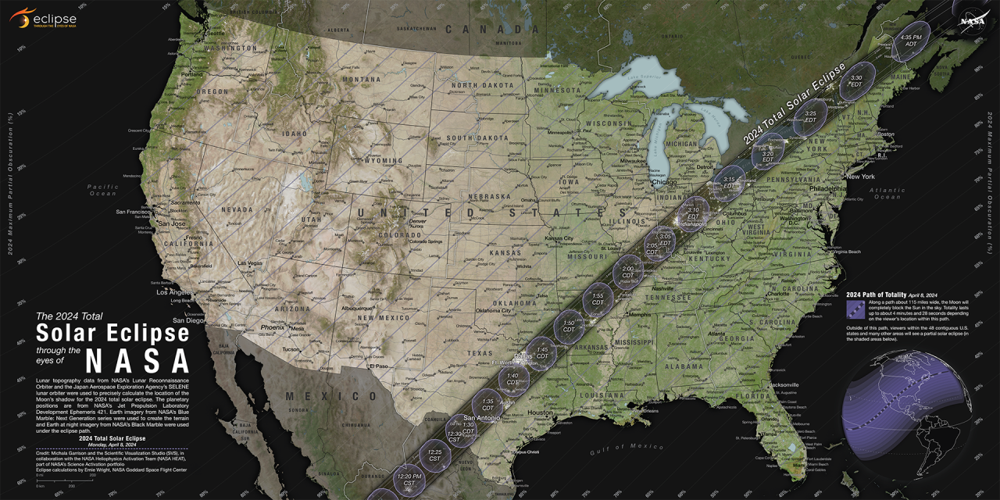

Luddy Eclipse 2024
What is an Eclipse?
A solar eclipse, like the one coming up on April 8, is a rare natural phenomena in which the moon is positioned directly in front of the sun.
This casts a shadow over Earth, darkening the sky, and causes a ring of light, called the corona, around the moon.
The corona, which is the outer atmosphere of the sun, cannot normally be seen, so a total eclipse is a great opportunity to view and study it.
While Bloomington is in the line of totality, it is only for a brief period of time, and not all places have this view. While the eclipse is not total, it will be a partial eclipse.
During a partial eclipse, the moon and sun are not in complete alignment, so it will appear as though a circle has been cut out of the sun.
This is a map by NASA of the path of this particular eclipse. As shown, the path of totality passes directly over where Bloomington, Indiana is on the map.

Source: NASA 2024 Eclipse
All parts of the partial eclipse must be viewed with proper safety equipment, such as eclipse glasses, pinhole viewers, or a telescope with proper solar filters, otherwise it could damage a person's eyesight.
When in totality ONLY, the eclipse may be viewed with the naked eye. It should look something like this:

Sources: NASA 2024 Eclipse
Space.com Solar Eclipse
Layout by Skeleton